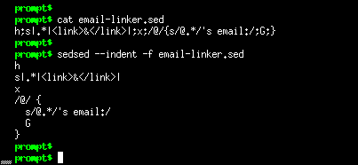
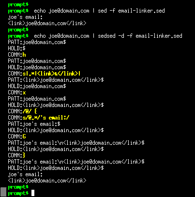

DESCRIPTION
sedsed can debug, indent, tokenize and HTMLize your sed scripts.
In debug mode it reads your script and add extra commands to it. When executed you can see the data flow between the commands, revealing all the magic sed does on its internal buffers.
In indent mode your script is reformatted with standard spacing.
In tokenize mode you can see the elements of every command you use.
In HTMLize mode your script is converted to a beautiful colored HTML file, with all the commands and parameters identified for your viewing pleasure.
With sedsed you can master ANY sed script. No more secrets, no more hidden buffers.
SCREENSHOTS
Quick sample
 |
The -d option turns debug ON. |
The --hide=hold options hides the HOLD SPACE buffer contents, because it is always empty on this example. |
The PATT: lines on sedsed's output shows the PATTERN SPACE buffer contents. |
The COMM: yellow lines show the command which is being executed. |
The user and otheruser lines are the sed's normal output. |
The $ sign at the end of PATT: lines represent the end of the buffer. |
Indent
|  |
The -f option reads the sed script from a file (just like in sed). |
The --indent option reformats complicated sed scripts into beautiful human-friendly scripts. |
Debug
|  |
The -d option turns debug ON. |
The HOLD: lines shows the HOLD SPACE buffer contents. |
| See how the PATTERN and HOLD SPACE buffers change between the sed commands. |
See the buffers swap with the x command. |
See the \n that is inserted in PATTERN SPACE between the two lines joined by the G command. |
| See sed under the curtains! |
HTMLize
Besides indent and debug, sedsed also has the ability to convert your sed scripts to nice HTML pages, with the syntax highlighted just as in Vim Editor, with nice colors!
prompt$ cat email-linker.sed
h;s|.*|<link>&</link>|;x;/@/{s/@.*/'s email:/;G;}
prompt$ sedsed --htmlize -f email-linker.sed > email-linker.sed.html
Here is the resulting HTML file:
Visit the sed Website for examples of more than 60 sed scripts HTMLized.
DOWNLOAD
- File: sedsed-1.0
- Language: Python
- License: GPL
Feeling wild? You can also try the fresh SVN version.
Found a bug? Please submit an issue.
USAGE
prompt$ sedsed --help
usage: sedsed OPTION [-e sedscript] [-f sedscriptfile] [inputfile]
OPTIONS:
-f, --file add file contents to the commands to be parsed
-e, --expression add the script to the commands to be parsed
-n, --quiet suppress automatic printing of pattern space
--silent alias to --quiet
-d, --debug debug the sed script
--hide hide some debug info (options: PATT,HOLD,COMM)
--color shows debug output in colors (default: ON)
--nocolor no colors on debug output
--dump-debug dumps to screen the debugged sed script
--emu emulates GNU sed (INCOMPLETE)
--emudebug emulates GNU sed debugging the sed script (INCOMPLETE)
-i, --indent script beautifier, prints indented and
one-command-per-line output do STDOUT
--prefix indent prefix string (default: 4 spaces)
-t, --tokenize script tokenizer, prints extensive
command by command information
-H, --htmlize converts sed script to a colorful HTML page
REFERENCE
| sedsed Output | |
|---|---|
PATT: |
Contents of the PATTERN SPACE buffer |
HOLD: |
Contents of the HOLD SPACE buffer |
COMM: |
The sed command being executed |
$ |
Terminates the PATT and HOLD contents |
... |
Lines that don't begin with any identifiers are STDOUT |
| Action Options | |
--debug |
DEBUG the sed script |
--indent |
Script beautifier, show indented source |
--tokenize |
Script tokenizer, show info about each command |
--htmlize |
Converts sed script to a colorful HTML page |
| Tips | |
! |
less -r is your friend to page the colorful output of -d |
! |
Use the --hide option to a cleaner debug output |
! |
--htmlize send results to STDOUT, so redirect it |
QA
sedsed was tested successfully against all the 5 stars (*****) extreme sed scripts from the Bonzini's excellent grab-bag site. So all the sed commands and structures wrote on these scripts, which are EXTREME, are correctly parsed. If you want to try at home, download and execute them this way:
echo -e "one\ntwo\nthree\nfour" | sedsed -d -f sodelnum.sed
echo -e "one\ntwo\nthree\nfour" | sedsed -d -f sort.sed
echo a{b{c{bla}}} | sedsed -d -f tex2xml.sed
echo "aa='abc" | sedsed -d -f config.sed
(date +'%w %d' ; date +'%-m %Y') | sedsed -d -f cal.sed
echo 4 4 + p | sedsed -d -f dc.sed
| YES! Now you can (try to) understand what happens inside the unbelievable dc.sed calculator. Check this great shot of a simple "4+4" becoming "8" :) |
{kind=link}
CHANGELOG
- v1.0 2004-12-09
-
- Portable: Huge changes to make the debug file portable, so now it works even in old UNIX versions of sed (thanks Gudermez for requesting and Laurent Voguel for his sedcheck tool).
- Debug diet and faster: The debug command to show the current sed command was simplified from "s///;P;s///" to a single "i" command, reducing the debug file size and increasing execution speed (thanks Thobias Salazar Trevisan for the idea).
- Now the sed program location on the system is configurable inside the script (if needed).
- The default indent prefix for --indent has changed from two to four spaces.
- Added --dump-debug option to inspect the generated debug file (implies --nocolor and --debug).
- Generated debug file more readable, with indented debug commands.
- Bugfix: Now parses a, c, i commands with ";" on the text (thanks Leo Mulders for reporting).
- v0.8 2003-11-15
-
- Huge code cleanup and rearrange, now it is readable
- Added -n option and its aliases --quiet and --silent (thanks Eric Pement)
- Added -H option as an alias to --htmlize
- Now accepts sed script on STDIN (like sed):
echo p | sed -f - file - Changed internal line separator string to ASCII chars (thanks Thobias Salazar)
- Bugfix: Script previous checking was broken (thanks Eric Pement)
- v0.7 2003-01-21
-
- Added --color option (for Windows users)
- Bugfix: Debug file line break on Windows (thanks Eric Pement)
- v0.6 2002-11-19
-
- Now sedsed works on Windows/DOS
- New stand-alone .EXE version for Windows users (by py2exe)
- Option -v REALLY changed to -V (lamer...)
- v0.5 2002-05-08
-
- The sedsed program is now compatible with old Python v1.5
- The sed debug file is now temporary (is removed)
- Option -v changed to -V
- Added "i" flag for "s///" command
- Now input text is read from pipeline (STDIN) and/or file(s), as in sed
- Now the sed script is read from -f <file> and/or -e <script>, as in sed
- v0.4 2002-03-27
-
- Added --htmlize option
- v0.3 2002-02-22
-
- Added --version option
- Added documentation
- Added i386 binary version
- v0.2 2001-12-22
-
- Status of "t" command preserved correctly (thanks Paolo Bonzini)
- v0.1 2001-12-21
-
- First release on sed-users list
SEE ALSO
- When debugging a sed script, sedsed shows the buffers contents between all commands, having no support for user-defined spypoints. If you want this feature, you should try sd, the spypoint-aware sed debugger written in shell script by Brian Hiles.
- Want to write portable scripts that will work on a wide range of sed flavors out there? Use the Laurent Voguel's sedcheck tool (it is a sed script!)
- Want to learn more about sed? Visit the sed Website, that has lots of documents and sample scripts.
- You will find more useful softwares at Aurelio's website.